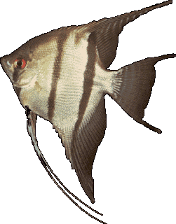

El�fordul�s
Megjelen�se
Rendszertan
V�ltozatai
A vitorl�shalak alakja elt�r a t�bbi b�lcs�sz�j� hal�t�l. Test�k korong alak�, oldalr�l lap�tott �s �sz�ik megny�ltak, ami megn�veli magass�gukat.
A vadon �l� vitorl�shalaknak k�t faja ismert: a Pterophyllum altum �s a Pterophyllum scalarae, melyeknek t�bb sz�nv�ltozat�t teny�sztett�k ki. Egyes v�lem�nyek szerint csup�n egy faj, a Pterophyllum scalare l�tezik, a t�bbi term�szetes v�ltozat. Testhossza 12-15 centim�ter. Alapsz�ne ez�st�s, f�gg�leges fekete cs�kokkal, de ma m�r kiteny�sztettek egysz�n� �s megny�lt uszony� v�ltozatokat is. Leggyakoribb sz�nv�ltozatok: feh�r, sz�rke f�st�s, fekete, m�rv�nymint�s, tarka �s arany.
M�lt�s�gteljes megjelen�s�k, kecses �sz�suk �s gondos sz�l�i magatart�suk miatt igen n�pszer� halak.

Vigye az egeret a k�p k�l�nb�z� r�szei f�l�!